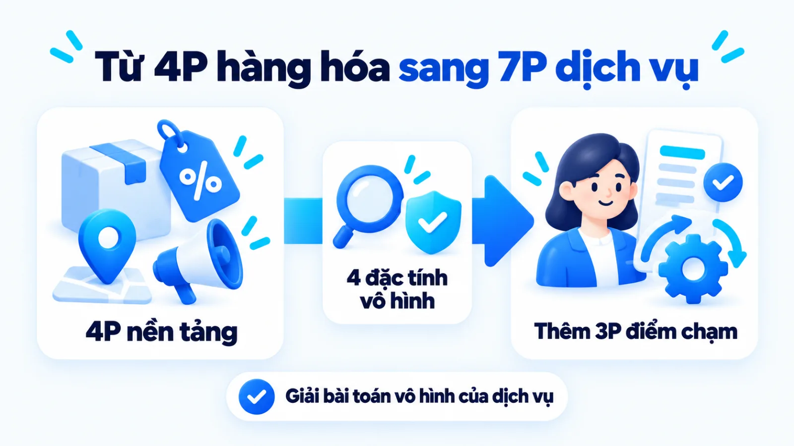
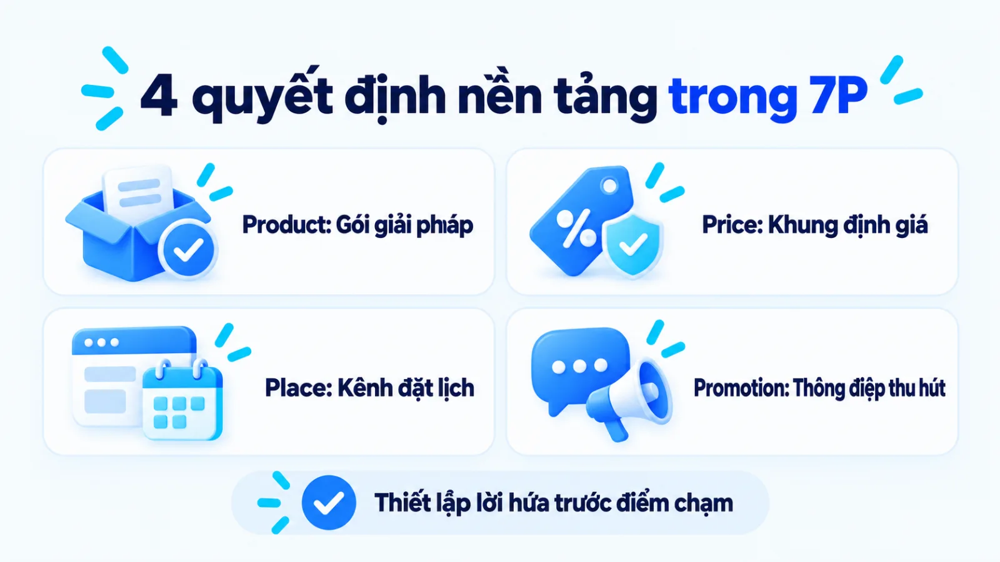
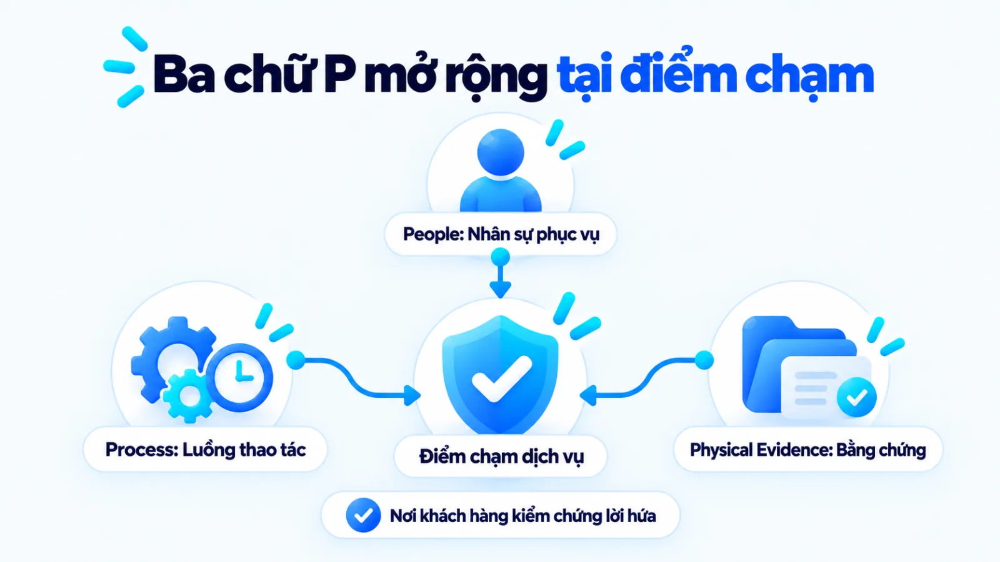
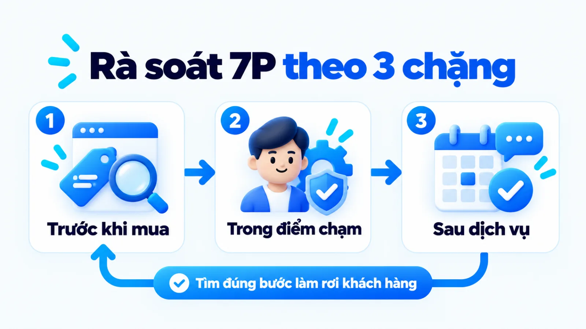
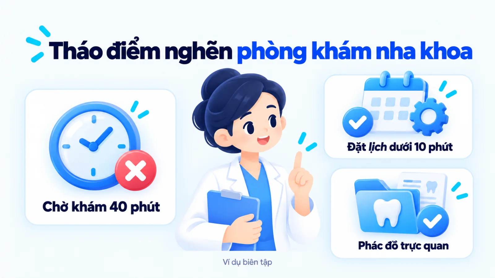
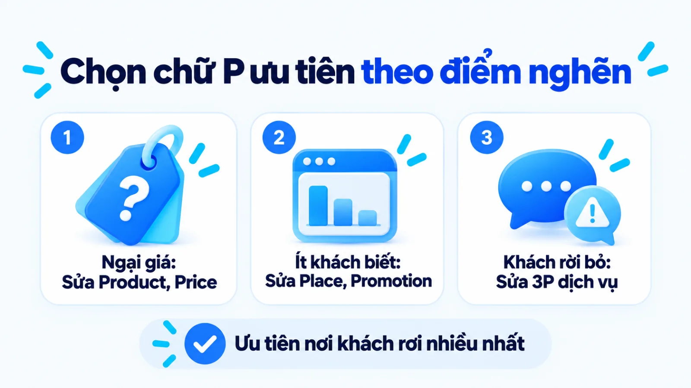
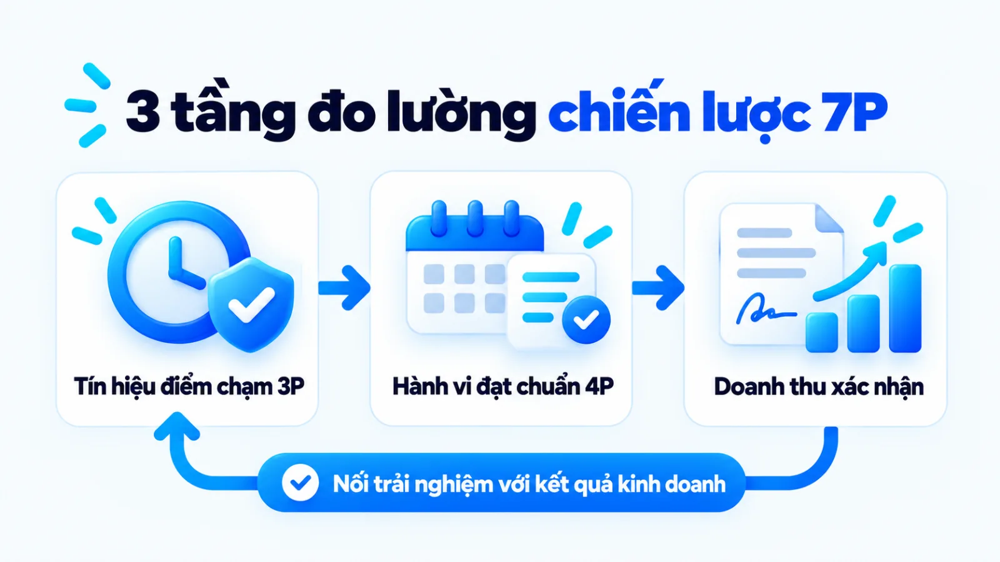

Chiến lược 7P là gì và cách ưu tiên cho dịch vụ
Chiến lược 7P là khung hoạch định Marketing Mix mở rộng từ mô hình 4P truyền thống, kết hợp sản phẩm, giá, phân phối, truyền thông với ba yếu tố con người, quy trình và bằng chứng hữu hình cho ngành dịch vụ. Với doanh nghiệp dịch vụ vừa và nhỏ, bài toán thực tế không nằm ở việc liệt kê đủ bảy danh mục trên giấy mà ở quyết định chọn yếu tố nào xử lý trước khi nguồn lực có hạn. Khi đội ngũ dồn ngân sách quảng cáo trong lúc quy trình phục vụ và nhân sự tại điểm chạm còn yếu, lượng khách đổ về sẽ làm quá tải vận hành và khiến khách hàng rời bỏ nhanh hơn. Tôi là Lê Tuấn Việt, Marketing Leader tại TAKI Group. Trong bài viết này, tôi phân tích ranh giới giữa bảy biến số, nguyên tắc chọn chữ P ưu tiên từ điểm nghẽn khách hàng và cách đo kết quả từ trải nghiệm điểm chạm đến doanh thu xác nhận.
- Đăng ngày
- Cập nhật

Tóm tắt nhanh
- Chiến lược 7P mở rộng từ mô hình 4P bằng cách thêm People, Process và Physical Evidence để kiểm soát chất lượng tại điểm chạm của dịch vụ vô hình.
- Doanh nghiệp vừa và nhỏ không triển khai dàn trải cả bảy yếu tố cùng lúc mà chọn một đến hai chữ P ưu tiên ngay tại bước khách hàng rời bỏ nhiều nhất.
- Khi điểm nghẽn nằm ở quy trình quá tải hoặc nhân sự chưa đồng chuẩn, việc đẩy mạnh Promotion sẽ khuếch đại trải nghiệm xấu thay vì tăng doanh thu.
- Khung đo lường 7P cần tách bạch ba tầng gồm tín hiệu trải nghiệm điểm chạm, hành vi trung gian đạt chuẩn và kết quả kinh doanh đã xác nhận.
Mục lục bài viết8 phần
Chiến lược 7P là gì trong Marketing dịch vụ
Chiến lược 7P là khung hoạch định và phối hợp 7 biến số trong Marketing Mix (tổ hợp tiếp thị) gồm Product (sản phẩm), Price (giá cả), Place (phân phối), Promotion (xúc tiến), People (con người), Process (quy trình) và Physical Evidence (bằng chứng hữu hình) nhằm giải quyết đặc tính vô hình của ngành dịch vụ.
Theo tài liệu năm 2022 của American Marketing Association (AMA, Hiệp hội Marketing Hoa Kỳ), mô hình 4P gồm Product, Price, Place và Promotion được E. Jerome McCarthy giới thiệu năm 1960. Đến năm 1981, Bernard H. Booms và Mary Jo Bitner mở rộng thêm ba yếu tố dịch vụ thành khung 7P theo tổng hợp năm 2020 của Oxford College of Marketing.

Quan hệ giữa Marketing Mix và chiến lược 7P
Theo sổ tay chuyên môn dài 12 trang xuất bản năm 2015 của Chartered Institute of Marketing (CIM, Viện Marketing Công chứng Anh Quốc), khung 7P mở rộng từ 4P gốc để điều phối đồng bộ các điểm chạm với người mua. Ba khái niệm dễ nhầm gồm Marketing Mix, chiến lược 7P và kế hoạch marketing hoàn chỉnh khác nhau ở phạm vi quản trị dưới đây:
- Marketing Mix (4P hoặc 7P): Tập hợp các biến số mà doanh nghiệp có thể trực tiếp kiểm soát và điều chỉnh để tác động đến phản hồi của thị trường mục tiêu.
- Chiến lược 7P: Logic sắp xếp thứ tự ưu tiên và kết nối nhất quán cả 7 biến số xoay quanh một định vị giá trị nhằm tháo gỡ rào cản mua hàng của một phân khúc cụ thể.
- Kế hoạch marketing hoàn chỉnh: Bản thiết kế vận hành bao trùm rộng hơn, chứa cả phần nghiên cứu thị trường, mục tiêu kinh doanh, phân bổ ngân sách, lịch trình và hệ thống chỉ số kiểm soát bên ngoài tổ hợp 7P.
Điểm tôi muốn làm rõ là việc điền đủ bảy ô thông tin vào biểu mẫu chưa tạo ra chiến lược. Một doanh nghiệp chỉ thực sự có chiến lược 7P khi quyết định ở chữ P này làm tăng sức mạnh cho chữ P kia, thay vì bộ phận truyền thông hứa hẹn một đằng còn bộ phận phục vụ làm một nẻo.
Phạm vi sử dụng của 7P với doanh nghiệp dịch vụ
Giáo trình đại học mở năm 2023 của OpenStax thuộc Đại học Rice chỉ rõ dịch vụ là giải pháp vô hình mà người mua không thể chạm tay, sở hữu vật chất hay lưu kho. Doanh nghiệp dịch vụ cần mở rộng từ 4P sang 7P để xử lý bốn đặc tính gồm vô hình, không tách rời, không đồng nhất và không lưu trữ được.
Vì khách hàng không thể cầm thử gói khám hay khóa học trước khi trả tiền, họ luôn ngại rủi ro mua nhầm. Lúc này, 4P đầu xác lập lời hứa giá trị để đưa khách tới điểm hẹn, còn 3P mở rộng biến lời hứa đó thành trải nghiệm kiểm chứng tại chỗ. Nhiều đơn vị thất bại khi tách rời lời hứa trước mua khỏi năng lực phục vụ.
Bốn quyết định nền tảng của chiến lược 7P
Bốn chữ P nền tảng của chiến lược 7P gồm Product, Price, Place và Promotion giúp xác lập cấu trúc gói giải pháp, cơ chế thu phí, kênh tiếp cận và thông điệp thu hút khách hàng trước điểm chạm. Bốn quyết định cốt lõi ở nhóm nền tảng này gồm các nội dung dưới đây:
- Product (Dịch vụ cốt lõi và bổ trợ): Xác định rõ phạm vi vấn đề được giải quyết, kết quả bàn giao cho khách hàng và các dịch vụ phụ trợ đi kèm gói chính.
- Price (Cấu trúc giá và điều kiện thu phí): Thiết lập mức phí phản ánh giá trị cảm nhận, phương thức thanh toán và chính sách giá điều tiết theo khung giờ hoặc công suất.
- Place (Kênh tiếp cận và giao dịch): Lựa chọn mặt bằng vật lý, nền tảng trực tuyến hoặc hệ thống đặt lịch giúp khách hàng tiếp cận dịch vụ với ít thao tác nhất.
- Promotion (Truyền thông và giải đáp trước mua): Truyền tải thông điệp, bằng chứng chuyên môn và lời giải đáp giúp khách hàng mục tiêu hiểu đúng giá trị trước khi đặt lịch.

Product và Price, quyết định về giá trị cùng mức giá
Tài liệu năm 2022 của AMA khẳng định Product trong tổ hợp tiếp thị có thể là hàng hóa hữu hình hoặc dịch vụ vô hình giải quyết nhu cầu thực tế của người mua. Trong ngành dịch vụ, thiết kế Product là đóng gói rõ phạm vi gồm giải pháp cốt lõi phải đạt, dịch vụ bổ trợ đi kèm và giới hạn đơn vị không nhận làm.
Tài liệu năm 2020 của Oxford College of Marketing nhấn mạnh Price là biến số duy nhất trong 7P trực tiếp tạo ra doanh thu, còn sáu yếu tố kia là chi phí vận hành. Đối chiếu với đặc tính dịch vụ không lưu kho được trong giáo trình năm 2023 của OpenStax, chính sách Price còn giúp doanh nghiệp điều tiết công suất theo khung giờ và định vị chất lượng.
Xét một ví dụ biên tập, không phải kết quả khách hàng thật: một phòng khám nha khoa 5 ghế máy tại Hà Nội ban đầu chỉ bán gói chỉnh nha giá cao ngay lần tư vấn đầu nên khách ngại rủi ro. Khi đơn vị tách Product thành gói chụp phim và lên phác đồ bước đệm phí nhỏ trước hợp đồng dài hạn, rào cản chi phí mới được tháo gỡ.
Place và Promotion, quyết định tiếp cận và truyền thông
Trong dịch vụ, Place không chỉ là mặt bằng vật lý mà gồm toàn bộ luồng tiếp cận từ bản đồ tìm kiếm, cổng đặt lịch trực tuyến đến ứng dụng nhắn tin. Quyết định Place đúng giúp rút ngắn khoảng cách từ lúc khách tìm hiểu đến khi giữ được lịch hẹn xác nhận mà không phải lặp lại thông tin qua nhiều khâu trung gian.
Khi triển khai Content Marketing trong Promotion, doanh nghiệp dịch vụ cần giải thích rõ cơ chế xử lý vấn đề thay vì chỉ đăng tin giảm giá. Việc xác định đúng cách chọn content angle (góc tiếp cận nội dung) và giữ brand voice và tone of voice (giọng điệu và sắc thái thương hiệu) nhất quán từ bài viết sang tin nhắn tư vấn giúp củng cố niềm tin trước mua.
Một sai lầm phổ biến của doanh nghiệp dịch vụ vừa và nhỏ là dùng Promotion quá đà để bù đắp cho gói Product chưa rõ phạm vi kết quả. Khi quảng cáo hứa hẹn vượt xa năng lực thực tế chỉ để lấy số điện thoại, đội ngũ tư vấn sẽ tốn nhiều giờ giải thích lại, còn khách hàng cảm thấy bị dẫn dắt sai lệch.
Phân biệt People, Process và Physical Evidence
People, Process và Physical Evidence là ba trụ cột vận hành trải nghiệm của chiến lược 7P, khác nhau ở đối tượng quản trị: năng lực nhân sự tại điểm chạm, luồng quy trình cung ứng và dấu hiệu vật chất giúp kiểm chứng chất lượng. Bảng dưới đây đối chiếu ba yếu tố này theo ba nhóm tiêu chí.
| Yếu tố và tiêu chí | Đối tượng quản trị và điểm chạm | Bằng chứng kiểm tra và rủi ro |
|---|---|---|
| People: Con người | Nhân sự tuyến đầu tiếp xúc trực tiếp và đội ngũ hậu cần hỗ trợ kỹ thuật phía sau | Kiểm qua thái độ, chuyên môn tư vấn; rủi ro chất lượng trồi sụt theo cảm xúc cá nhân |
| Process: Quy trình | Trình tự các bước từ đặt lịch, tiếp nhận, thực thi dịch vụ đến hỗ trợ sau bán | Kiểm qua thời gian chờ và tỷ lệ lỗi thao tác; rủi ro thủ tục rườm rà làm khách bỏ cuộc |
| Physical Evidence | Không gian vật lý, trang thiết bị, giao diện số và tài liệu xác nhận giao dịch | Kiểm qua độ sạch sẽ, hồ sơ năng lực, hợp đồng; rủi ro cơ sở sơ sài làm mất niềm tin |
Giới hạn khi đọc bảng: trong vận hành thực tế, một điểm chạm khách hàng luôn có sự giao thoa của cả ba yếu tố trên. Khi khách phàn nàn thủ tục quá lâu, người phụ trách cần tách xem nguyên nhân gốc nằm ở nhân viên chưa thuộc nghiệp vụ (People), phần mềm bắt nhập liệu lặp (Process) hay biển chỉ dẫn tại sảnh mờ nhạt (Physical Evidence).

People tại các điểm tiếp xúc với khách hàng
Sổ tay 7Ps năm 2015 của CIM chỉ rõ mọi nhân sự tiếp xúc trực tiếp hoặc gián tiếp với khách hàng đều quyết định mức độ hài lòng tại điểm chạm. Do tính không tách rời của dịch vụ, thái độ và năng lực xử lý tình huống của bác sĩ, giảng viên hay lễ tân lúc phục vụ chính là chất lượng của toàn bộ thương hiệu.
Khi quản trị People, doanh nghiệp cần tách rõ hai nhóm: nhân sự tuyến đầu (frontline staff) trực tiếp tư vấn, phục vụ và nhân sự hậu cần (backstage support) phụ trách kỹ thuật, dữ liệu, điều phối lịch phía sau. Nếu chỉ rèn giao tiếp cho lễ tân mà thiếu quy chuẩn phối hợp với hậu cần, nhân viên tuyến đầu vẫn bị động khi xử lý phát sinh tại chỗ.
Process trong quá trình cung ứng dịch vụ
Theo tài liệu năm 2015 của CIM, yếu tố Process quản trị toàn bộ luồng cung ứng từ lúc khách hàng tìm hiểu, đặt dịch vụ đến khi nhận dịch vụ và hỗ trợ sau bán. Quy trình rõ ràng là hàng rào kỹ thuật giúp kiểm soát tính không đồng nhất, bảo đảm khách đến vào đầu tuần hay cuối tuần đều nhận chất lượng tương đương nhau.
Khi thiết kế Process, doanh nghiệp dịch vụ vừa và nhỏ cần tách rõ hai lớp gồm quy trình khách hàng tự thao tác bên ngoài và quy trình phối hợp nội bộ giữa tư vấn với kỹ thuật. Điều kiện để chuẩn hóa là quy định rõ dữ liệu bàn giao giữa hai khâu nhằm tránh bắt khách lặp lại thông tin.
Physical Evidence giúp khách hàng đánh giá điều gì
Tài liệu 7Ps năm 2015 của CIM giải thích rằng việc chọn mua một dịch vụ chưa từng trải nghiệm luôn tạo cảm giác rủi ro cho người tiêu dùng, và Physical Evidence cung cấp dấu hiệu hữu hình để xóa bỏ sự mơ hồ đó. Khách hàng luôn dùng những thứ mắt thấy tai nghe trước và trong khi dùng dịch vụ làm thước đo ngầm cho chất lượng vô hình.
Doanh nghiệp cần quản trị hai lớp bằng chứng: bằng chứng thiết yếu (essential evidence) gắn với việc cung ứng như phòng ốc, thiết bị, phần mềm và bằng chứng ngoại vi (peripheral evidence) khách lưu giữ được như hợp đồng, phác đồ hay hồ sơ năng lực. Một dịch vụ giá cao nhưng gửi báo giá sai chính tả sẽ tự làm mất uy tín ngay ở lớp ngoại vi.
Cách xây chiến lược 7P từ điểm nghẽn khách hàng
Quy trình xây dựng chiến lược 7P cho doanh nghiệp dịch vụ vừa và nhỏ gồm bốn bước tuần tự: xác định bài toán khách hàng, thu thập bằng chứng hiện trạng, chọn điểm nghẽn ưu tiên có kiểm tác động chéo và giao đầu ra kèm mốc đo lại. Thứ tự bốn bước dưới đây giúp đội ngũ tập trung đúng điểm nghẽn.
- 01Xác định bài toán và rào cản muaChốt phân khúc khách hàng, mục tiêu kinh doanh và lý do chính khiến khách ngần ngại.
- 02Thu thập bằng chứng hiện trạng 7PĐối chiếu dữ liệu phản hồi thật theo ba chặng Trước, Trong và Sau dịch vụ.
- 03Chọn P ưu tiên và kiểm tác động chéoKhoanh vùng tối đa hai chữ P gây rớt khách lớn nhất và rà soát mâu thuẫn.
- 04Giao đầu ra và đặt lịch đo lạiChuyển hóa thành tiêu chuẩn công việc, phân công người giữ và chốt kỳ đánh giá.

Bước 1: Xác định khách hàng, mục tiêu và vấn đề
Người phụ trách marketing cùng chủ doanh nghiệp khởi đầu bằng việc chốt rõ phân khúc khách hàng trọng tâm cho dịch vụ chủ lực, mục tiêu kinh doanh trong kỳ và rào cản lớn nhất ngăn khách trả tiền. Dữ liệu đầu vào là lịch sử giao dịch và lý do từ chối thực tế, không phải bản mô tả chân dung chung chung từ báo cáo ngành.
Đầu ra: Bản mô tả phân khúc mục tiêu kèm chỉ tiêu định lượng rõ kỳ đo; dấu hiệu hoàn tất: danh sách các rào cản mua hàng chính có bằng chứng xác nhận.
Bước 2: Thu thập bằng chứng hiện trạng của từng P
Bộ phận marketing cùng vận hành rà soát toàn bộ các biến số trong tổ hợp theo từng chặng Trước khi mua, Trong điểm chạm và Sau dịch vụ. Để tránh cảm tính, đội ngũ cần đối chiếu nguồn zero-party data và first-party data (dữ liệu khách tự khai báo và dữ liệu doanh nghiệp sở hữu) từ khảo sát, tin nhắn và phản hồi tại quầy.
Đầu ra: Bảng chẩn đoán hiện trạng 7P theo từng điểm chạm hành trình; dấu hiệu hoàn tất: mỗi điểm yếu đều đính kèm bằng chứng từ khách hàng thật.
Bước 3: Chọn điểm nghẽn ưu tiên và kiểm tác động chéo
Dựa trên bảng chẩn đoán, người phụ trách marketing cùng chủ doanh nghiệp khoanh vùng chữ P gây rớt khách lớn nhất để xử lý trước và kiểm tra tác động chéo với các biến số còn lại. Nếu nâng Price hoặc tung gói Product cao cấp, đơn vị phải rà soát xem Physical Evidence tại điểm bán và tay nghề của People đã tương xứng hay chưa.
Đầu ra: Quyết định chốt chữ P trọng tâm cần ưu tiên xử lý trong kỳ; dấu hiệu hoàn tất: bản kiểm tra đủ điều kiện phối hợp ở các biến số liên quan.
Bước 4: Giao đầu ra, người phụ trách và thời điểm đo lại
Phương án ưu tiên sau khi duyệt được chuyển thành các hạng mục công việc gắn với ngân sách, SLA (cam kết mức độ phục vụ) cho từng vị trí và lịch đọc kết quả cố định. Thay vì giao việc mơ hồ như nâng cao thái độ, bản phân công phải quy định rõ thao tác chuẩn tại điểm chạm, người kiểm tra và mốc đánh giá định kỳ.
Đầu ra: Bảng phân công thực thi ghi rõ hạng mục, người phụ trách; dấu hiệu hoàn tất: có tiêu chí nghiệm thu và lịch rà soát số liệu định kỳ.
Ví dụ biên tập, không phải kết quả khách hàng thật
Áp dụng 4 bước gỡ điểm nghẽn cho phòng khám nha khoa 5 ghế máy
Trong ví dụ biên tập về phòng khám nha khoa tại Hà Nội, dữ liệu chẩn đoán chỉ ra khách chần chừ chốt gói vì phải chờ hơn 40 phút tại sảnh (Process) và thiếu phác đồ minh họa lúc tư vấn (Physical Evidence). Đơn vị đã giữ nguyên ngân sách quảng cáo để phân luồng lịch hẹn giảm thời gian chờ xuống dưới 10 phút và chuẩn hóa bộ phác đồ.

Ưu tiên P nào khi doanh nghiệp thiếu nguồn lực
Khi ngân sách và nhân sự có hạn, doanh nghiệp dịch vụ vừa và nhỏ cần chọn chữ P ưu tiên dựa trên vị trí khách hàng rời bỏ nhiều nhất trên hành trình mua thay vì chia đều nguồn lực. Bảng bản đồ quyết định dưới đây phân bổ thứ tự ưu tiên theo ba nhóm triệu chứng điểm nghẽn.
| Vị trí điểm nghẽn | Thứ tự P cần ưu tiên xử lý | Việc làm ngay và rủi ro cần tránh |
|---|---|---|
| Nghẽn ở giá trị, mức giá | Ưu tiên Product và Price trước, củng cố thêm Physical Evidence | Tách gói dịch vụ bước đệm để giảm rủi ro mua; tránh chạy giảm giá sâu làm hỏng định vị |
| Nghẽn ở tiếp cận, độ phủ | Ưu tiên Place và Promotion sau khi đã kiểm tra công suất phục vụ | Tối ưu cổng đặt lịch và nội dung giải đáp; tránh mở rộng kênh khi chưa có người trực |
| Nghẽn ở khâu cung ứng | Bắt buộc khóa Process và đào tạo lại People trước mọi hoạt động khác | Chuẩn hóa thao tác điểm chạm và giảm thời gian chờ; tạm dừng tăng ngân sách quảng cáo |
Giới hạn khi đọc bảng: thứ tự ưu tiên trên chỉ phát huy tác dụng khi doanh nghiệp đã có dữ liệu phễu cơ bản để biết khách đang rớt ở bước nào. Nếu đơn vị mới thành lập và chưa có khách trải nghiệm đầu tiên, trọng tâm phải đặt vào việc đóng gói Product và quy trình cung ứng tối thiểu trước khi tối ưu chuyển đổi.

Điểm nghẽn nằm ở giá trị hoặc mức giá
Dấu hiệu điển hình của điểm nghẽn này là tin nhắn hỏi dịch vụ vẫn về đều, tư vấn viên phản hồi nhanh, nhưng khách liên tục từ chối ngay khi nghe báo giá. Nguyên nhân thường không phải vì mức giá tuyệt đối quá cao, mà vì gói Product đang buộc người mua chi khoản tiền lớn ngay lập tức cho dịch vụ vô hình chưa có bảo chứng.
Trong trường hợp này, tôi ưu tiên điều chỉnh lại sự kết hợp giữa Product, Price và Physical Evidence trước khi đụng vào ngân sách quảng cáo. Doanh nghiệp có thể tách nhỏ dịch vụ thành bước chẩn đoán hoặc dùng thử có thu phí hợp lý, đi kèm hồ sơ năng lực và biên bản cam kết đầu ra rõ ràng để khách kiểm chứng trước khi ký hợp đồng dài hạn.
Điểm nghẽn nằm ở tiếp cận hoặc truyền thông
Ngược lại, có những đơn vị dịch vụ sở hữu đội ngũ chuyên môn giỏi, khách hàng đã trải nghiệm đều đánh giá hài lòng và quay lại sử dụng, nhưng số lượng khách mới mỗi tháng rất ít ỏi. Khi chất lượng cung ứng bên trong đã vững mà thị trường mục tiêu chưa biết tới hoặc gặp khó khăn lúc tìm kiếm, điểm nghẽn thực sự nằm ở Place và Promotion.
Lúc này, việc dồn nguồn lực vào mở rộng kênh hiện diện và làm rõ thông điệp truyền thông mới mang lại hiệu quả thực chất. Trên môi trường số, người phụ trách cần tối ưu điểm chạm tìm kiếm địa phương, đơn giản hóa biểu mẫu đặt lịch trên điện thoại và xây dựng chuỗi nội dung giải đáp đúng câu hỏi chuyên môn của người mua.
Điểm nghẽn nằm ở trải nghiệm cung ứng dịch vụ
Vậy nếu doanh nghiệp vẫn cố tăng ngân sách quảng cáo khi khâu phục vụ đang tắc thì điều gì sẽ xảy ra? Đây là ngoại lệ đảo chiều nguy hiểm nhất: khi Process rườm rà và People chưa đồng chuẩn, việc đẩy mạnh Promotion sẽ dồn lượng khách lớn vào hệ thống đang lỗi, làm tăng thời gian chờ và khiến đánh giá tiêu cực lan truyền nhanh hơn.
Tại nhiều doanh nghiệp nhỏ, nút thắt nằm ở việc bộ phận Marketing chỉ chịu KPI (chỉ số đánh giá hiệu quả công việc) về số khách hẹn, còn bộ phận Vận hành chịu trách nhiệm phục vụ tại điểm bán. Khi khách đến nhiều nhưng tỷ lệ hoàn tất thấp, người phụ trách phải tạm dừng mở rộng đầu phễu để sửa quy trình. Chưa chuẩn quy trình thì đừng đốt thêm quảng cáo.
Cách đo và điều chỉnh chiến lược 7P
Đo lường chiến lược 7P đòi hỏi tách bạch ba lớp dữ liệu gồm tín hiệu trải nghiệm điểm chạm, hành vi trung gian đạt chuẩn và kết quả kinh doanh xác nhận, đồng thời rà soát độ lệch giữa lời hứa với vận hành. Bảng dưới đây phân bổ chỉ số và giới hạn quy kết cho ba tầng đánh giá.
| Tầng đo và nhóm P | Chỉ số theo dõi và nguồn dữ liệu | Giới hạn khi đọc kết quả |
|---|---|---|
| Tầng 1: Trải nghiệm (3P) | Thời gian chờ, tỷ lệ phản hồi, điểm hài lòng từ khảo sát và CRM (quản trị quan hệ khách hàng) | Phản ánh chất lượng điểm chạm; điểm hài lòng cao chưa tự động đảm bảo khách sẽ mua tiếp |
| Tầng 2: Hành vi chuẩn (4P) | Lượt đặt lịch, gửi biểu mẫu, nhấp gọi điện đo qua GA4 (Google Analytics 4) và cổng đặt lịch | Là tín hiệu tiến triển trung gian; cần lọc bỏ các lượt đặt lịch trùng hoặc hủy hẹn trước giờ |
| Tầng 3: Doanh thu xác nhận | Tỷ lệ khách đến thực tế, doanh thu thuần, chi phí thu hút và tỷ lệ khách quay lại từ kế toán | Là thước đo hiệu quả cuối cùng nhưng có độ trễ; không chỉ ra ngay bước nào trên phễu bị lỗi |
Giới hạn khi đọc bảng: không có một chỉ số đơn lẻ nào chứng minh được hiệu quả của toàn bộ 7P. Doanh thu tháng này tăng có thể đến từ mùa vụ hoặc khách cũ quay lại dù chiến dịch mới hoạt động kém; ngược lại, lượt đặt lịch tăng nhưng doanh thu đi ngang lại báo hiệu sự đứt gãy ở khâu tiếp đón và tư vấn trực tiếp.

Khung đo từ tín hiệu trải nghiệm đến kết quả kinh doanh
Theo hướng dẫn năm 2024 của Google Analytics Help, doanh nghiệp cần đánh dấu các sự kiện quan trọng (key events) phản ánh hành động có giá trị kinh doanh trên môi trường số. Trong dịch vụ, lượt hoàn tất biểu mẫu đặt lịch hay tải bảng giá được đo như micro conversion (chuyển đổi vi mô) ở Tầng 2 nhằm đánh giá sức hút của 4P đầu trước khi khách tới điểm bán.
Khi đọc báo cáo đa kênh, đội ngũ cần tính đến độ nhiễu của hành trình truyền miệng. Nhiều khách đọc bài trên mạng xã hội, hỏi bạn bè qua dark social (kênh chia sẻ riêng tư khó đo lường trực tiếp) rồi vài tuần sau mới tự gõ tên đơn vị để đặt lịch. Hiện tượng này khiến công cụ dễ quy kết nhầm nếu thiếu câu hỏi khảo sát tại quầy tiếp đón.
Trong dự án cố vấn Marketing cho Hệ thống Y Đa khoa TOMEC (tháng 8/2025 đến tháng 8/2026) do tôi phụ trách, hoạt động tối ưu đã giúp tăng 40% khách hàng tiềm năng và giảm 54% CPL (chi phí trên một khách hàng tiềm năng), từ 1,2 triệu xuống 550.000 đồng mỗi data. Kết quả này minh họa hiệu quả trong kỳ đo của dự án, không phải mức cam kết cho mọi ngành.
Dấu hiệu các quyết định trong 7P thiếu nhất quán
Trong quá trình rà soát định kỳ, người làm hoạch định cần kiểm tra xem các biến số trong 7P có đang tự triệt tiêu lẫn nhau hay không. Bốn dấu hiệu cảnh báo sớm cho thấy tổ hợp 7P của doanh nghiệp dịch vụ đang thiếu nhất quán gồm có:
- Định giá cao cấp nhưng bằng chứng hữu hình sơ sài: Gói Product và mức Price đặt ở phân khúc chất lượng cao, nhưng website lỗi giao diện, phòng đón tiếp thiếu chỉn chu hoặc hợp đồng báo giá cẩu thả khiến khách hàng nghi ngờ năng lực thật.
- Truyền thông hứa hẹn tốc độ nhưng quy trình nhiều thủ tục: Thông điệp Promotion nhấn mạnh sự nhanh gọn, tiện lợi, nhưng khi khách bước vào Process thực tế lại phải chờ duyệt qua nhiều cấp và điền lại giấy tờ thủ công.
- Mở rộng điểm bán nhanh hơn tốc độ đào tạo nhân sự: Doanh nghiệp mở thêm chi nhánh hoặc kênh tiếp nhận mới (Place) ồ ạt trong khi đội ngũ People chưa được huấn luyện theo cùng một quy chuẩn, làm chất lượng dịch vụ phân mảnh giữa các cơ sở.
- Thay đổi gói dịch vụ nhưng không cập nhật kịch bản tuyến đầu: Bộ phận marketing tung ra chương trình ưu đãi hoặc gói Product mới nhưng lễ tân và tư vấn viên (People) không nắm rõ điều kiện áp dụng, dẫn tới trả lời sai lệch tại quầy tiếp đón.
Câu hỏi thường gặp về chiến lược 7P
Doanh nghiệp bán hàng hóa vật lý có cần dùng 7P không?
Có, nếu hàng hóa đó đi kèm dịch vụ tư vấn chuyên sâu, lắp đặt kỹ thuật, bảo hành dài hạn hoặc trải nghiệm mua sắm trực tiếp tại cửa hàng ảnh hưởng lớn đến quyết định chi tiền. Với mặt hàng tiêu dùng đóng gói phân phối đại trà qua siêu thị, mô hình 4P truyền thống thường đã đủ để quản trị các quyết định cốt lõi. Doanh nghiệp sản xuất chỉ nên mở rộng sang 7P khi khách hàng bắt đầu đánh giá thương hiệu qua thái độ nhân viên, tốc độ xử lý đơn và không gian điểm bán.
Chiến lược 7P khác gì với mô hình 4C trong Marketing?
Chiến lược 7P đặt trọng tâm vào bảy biến số mà doanh nghiệp trực tiếp thiết kế và kiểm soát, trong khi mô hình 4C nhìn bài toán từ góc độ nhu cầu, chi phí bỏ ra, sự thuận tiện và giao tiếp của người mua. Trong thực tế hoạch định, hai khung này không thay thế nhau mà bổ trợ theo trình tự trước sau. Đội ngũ dùng 4C để thấu hiểu rào cản của khách hàng trước, sau đó chuyển hóa thành bảy quyết định vận hành cụ thể trong 7P.
Làm sao đồng bộ People và Process khi mở thêm chi nhánh?
Đồng bộ People và Process khi mở thêm chi nhánh đòi hỏi doanh nghiệp đóng gói Process thành quy trình thao tác chuẩn có tiêu chí nghiệm thu rõ ràng trước khi tuyển dụng và đào tạo mở rộng People. Đội ngũ vận hành cần tách bạch các bước có thể tự động hóa bằng công nghệ như đặt lịch, nhắc hẹn, xuất phiếu thu khỏi các bước đòi hỏi chuyên môn cá nhân. Cách phân tách này giúp giảm độ lệch chất lượng giữa các ca làm việc và giữa các điểm bán mới.
Bao lâu doanh nghiệp dịch vụ nên rà soát lại chiến lược 7P?
Doanh nghiệp dịch vụ nên rà soát định kỳ mỗi quý đối với các biến số linh hoạt như thông điệp Promotion, luồng Process và kịch bản tiếp đón của People, đồng thời đánh giá tổng thể cấu trúc 7P theo chu kỳ nửa năm hoặc một năm. Ngoài lịch cố định, người phụ trách cần kiểm tra lại ngay khi xuất hiện tín hiệu bất thường trên phễu chuyển đổi. Các dấu hiệu cần rà soát gấp gồm tỷ lệ khách hủy lịch hẹn tăng cao, chi phí thu hút khách mới đội lên hoặc khi đơn vị ra mắt gói dịch vụ mới.
Website và ứng dụng thuộc Place hay Physical Evidence?
Website và ứng dụng di động đảm nhận cả hai vai trò tùy theo chức năng mà khách hàng đang tương tác trên đó. Khi nền tảng số là nơi khách hàng tra cứu lịch trống, đặt hẹn, thanh toán và nhận kết quả dịch vụ trực tuyến thì nó đóng vai trò là kênh phân phối Place. Ngược lại, bố cục giao diện, tốc độ tải trang, hình ảnh cơ sở vật chất và hồ sơ năng lực hiển thị trên website chính là bằng chứng hữu hình Physical Evidence giúp củng cố niềm tin trước mua.
Khi nào tăng ngân sách Promotion lại làm hại doanh nghiệp?
Không nên tăng ngân sách Promotion khi điểm nghẽn thực sự đang nằm ở quy trình Process quá tải hoặc đội ngũ People chưa đạt chuẩn phục vụ tại điểm chạm. Khi lượng khách mới đổ về vượt quá công suất tiếp nhận, thời gian chờ đợi kéo dài và sai sót thao tác sẽ xuất hiện dày đặc hơn. Lúc này, chi phí quảng cáo vô tình trở thành khoản đầu tư giúp khuếch đại trải nghiệm kém và đẩy nhanh tốc độ lan truyền phản hồi tiêu cực trên thị trường.
Kết luận
Giá trị thực tế của chiến lược 7P không nằm ở việc điền đủ bảy danh mục trên giấy mà ở khả năng gỡ đúng điểm nghẽn khách hàng và giữ sự nhất quán giữa lời hứa ở 4P đầu với trải nghiệm của 3P dịch vụ. Muốn tăng trưởng dịch vụ bền vững, năng lực đáp ứng của quy trình và con người phải đi khớp với tốc độ mở rộng truyền thông.
Ngay trong tuần này, bạn hãy gom các lý do từ chối gần nhất ở dịch vụ chủ lực vào từng chặng Trước, Trong và Sau dịch vụ để tìm chữ P gây rớt khách. Khi bài toán vượt quá việc sửa điểm lẻ và cần khung hoạch định đồng bộ tại chuyên mục Marketing, bạn cần chuẩn hóa lại toàn phễu. Doanh nghiệp bạn đang nghẽn ở khâu thu hút hay tại điểm chạm phục vụ?